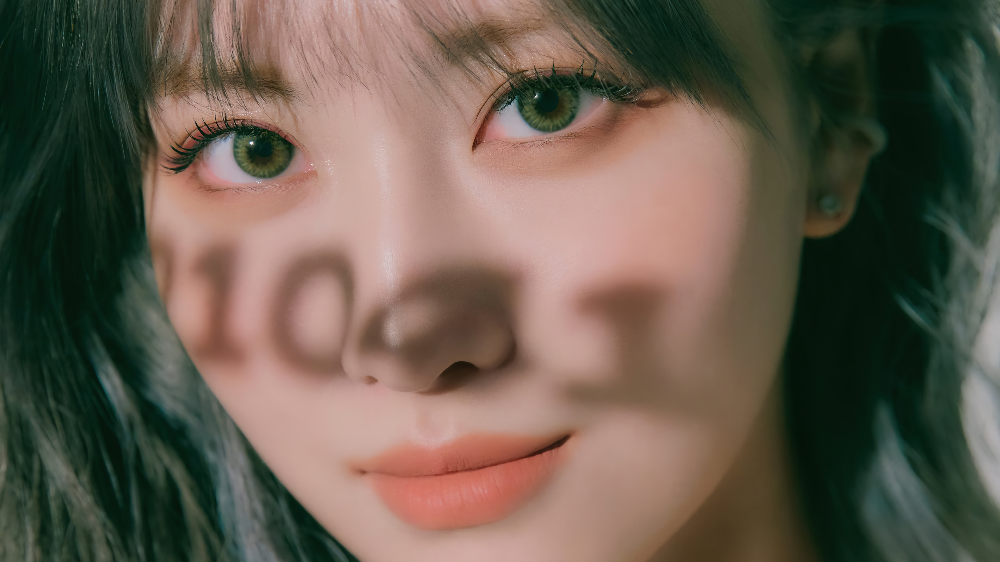

Descubre las Tendencias de Maquillaje del Momento
Las Tendencias Actuales
Brillo y Luminosidad Infalibles:
Esta temporada, el brillo y la luminosidad se han apoderado de los looks de maquillaje. Desde iluminadores iridiscentes hasta sombras de ojos metálicas, el enfoque está en lograr una piel radiante y un brillo sutil pero impactante que capte la luz en cada ángulo.
Colores Atrevidos y Texturas Arriesgadas:
El maquillaje se está volviendo audaz y valiente con colores vibrantes como azules eléctricos, púrpuras profundos y verdes esmeralda. Además, las texturas experimentales, como el maquillaje holográfico y los acabados glossy, están ganando popularidad, ofreciendo un estilo único y llamativo.
Maquillaje Natural y Ecológico:
La tendencia hacia lo natural no ha perdido fuerza. Cada vez más personas están optando por productos de maquillaje naturales y ecológicos que no solo embellecen, sino que también son respetuosos con el medio ambiente y la piel. Ingredientes como aceites esenciales, pigmentos naturales y envases reciclables están dominando el mercado.
Innovación en las Cejas:
Las cejas siguen siendo el marco perfecto para el rostro, pero ahora están tomando un enfoque más audaz y definido. Desde cejas gruesas y definidas hasta cejas plumosas y naturales, las tendencias actuales se centran en realzar esta característica clave con técnicas de microblading, tintes y geles para cejas.